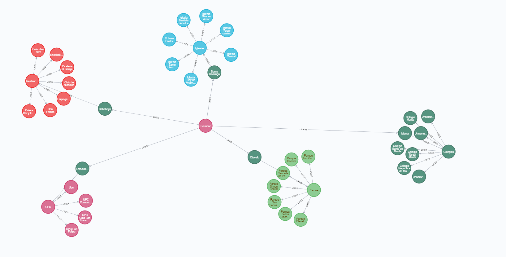

Fanny Gutama

Distancia Cuclidiana
Si un avión tiene que viajar a distintas ciudades de ida y vuelta, y durante este transcurso
definir cuál es el mejor camino, este algoritmo definirá aeropuertos centrales los que le
permitirá ir de una ciudad hasta otro pasando por la central haciendo que los vuelos sean mas
eficientes.
La distancia euclidiana solo se calcula sobre dimensiones no NULL. Los procedimientos deben
recibir la misma cantidad de datos para todos los elementos y deben rellenarse cuando sea
necesario.
Ejemplo
Podriamos averiguar los tipos de peliculas que les puede guartar a un grupo de personas, y si se
toma un nodo se podria hacer el calculo para ver cual es la similitud con los demas de tener los
mismo gusto

BASE DE DATOS
Distancia entre Ecuador y Manta
Un nodo con valor 1, Sera un nodo que esta conectado con todo los demas nodos
MATCH (p1:Pais {name: 'Ecuador'})-[likes1:LIKES]->(Pais) MATCH (p2:Ciudad {name: 'Manta'})-[likes2:LIKES]->(Ciudadad) RETURN p1.name AS PAIS, p2.name AS CIUDAD, gds.alpha.similarity.euclideanDistance(collect(likes1.score), collect(likes2.score)) AS similarity
Distancia entre Babahoyo y Restaurantes
Un nodo con valor 1, Sera un nodo que esta conectado con todo los demas nodos
MATCH (p1:Ciudad {name: 'Babahoyo'})-[likes1:LIKES]->(Ciudad) MATCH (p2:Restaurants {})-[likes2:LIKES]->(Restaurant) RETURN p1.name AS PAIS, p2.name AS CIUDAD, gds.alpha.similarity.euclideanDistance(collect(likes1.score), collect(likes2.score)) AS similarity
Similitud entre Ecuador y Sus Ciudades
MATCH (p1:Ciudad {name: 'Santo Domingo'})-[likes1:LIKES]->(Pais) MATCH (p2:Iglesias)-[likes2:LIKES]->(Iglesias) WHERE p2 <> p1 RETURN p1.name AS from, p2.name AS to, gds.alpha.similarity.euclideanDistance(collect(likes1.score), collect(likes2.score)) AS similarity ORDER BY similarity DESC